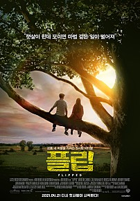
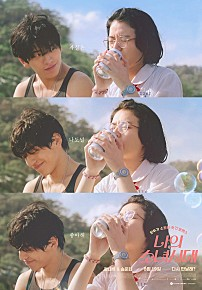
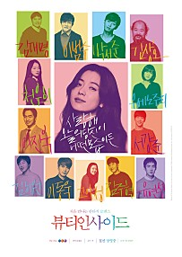
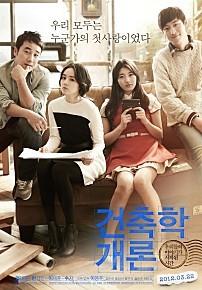

Romance
어바웃타임
⭐⭐⭐⭐⭐⭐⭐⭐⭐(9.3/10)
모태솔로 팀은 성인이 된 날, 아버지로부터 놀랄만한 가문의 비밀을 듣게 된다. 바로 시간을 되돌릴 수 있는 능력이 있다는 것!
런던으로 간 팀은 우연히 만난 사랑스러운 메리에게 첫눈에 반하게 된다.
사랑을 얻기 위해 자신의 능력을 발휘하는 팀. 꿈에 그리던 그녀와 최고의 순간을 보낸다.
하지만 사랑이 완벽해질수록 주변 상황들은 미묘하게 엇갈리고,
예상치 못한 사건들이 나타나기 시작하는데…

Romance
플립
⭐⭐⭐⭐⭐⭐⭐⭐⭐(9.1/10)
새로 이사 온 미소년 브라이스를 보고 첫눈에 사랑을 직감한 7살 소녀 줄리. 용감한 줄리는 자신의 마음을 적극적으로 표현하지만 소년은 소녀가 부담스럽다.
줄리의 러브빔을 요리조리 피해 다니기를 6년!
브라이스는 줄리에게 받은 달걀을 쓰레기통에 버리다 들키고,
화가 난 줄리는 브라이스를 피하기 시작한다.
성가신 그녀가 사라지자 오히려 전 같지 않게 줄리가 신경 쓰이기 시작하는데…
Romance
러브액츄얼리
⭐⭐⭐⭐⭐⭐⭐⭐⭐(9.2/10)
크리스마스에 모두에게 전하고 싶은 로맨틱한 고백
사랑에 상처받은 당신을 위해,
사랑하지만 말하지 못했던 당신을 위해,
사랑에 확신하지 못했던 당신을 위해,
모두의 마음을 따뜻하게 할 선물이 찾아옵니다.

Romance
나의 소녀시대
⭐⭐⭐⭐⭐⭐⭐⭐(8.8/10)
고마워, 내 소중한 추억이 되어줘서! 돌아가고 싶은 리즈시절(?) 숨기고 싶은 흑역사(!)
1994년 대책 없이 용감했던 고딩시절, 유덕화 마누라가 꿈인 평범한 소녀 ‘린전신’과
학교를 주름잡는 비범한 소년 ‘쉬타이위’의 첫사랑 밀어주기 대작전

Romance
뷰티인사이드
⭐⭐⭐⭐⭐⭐⭐⭐(7.7/10)
남자, 여자, 아이, 노인.. 심지어 외국인까지! 자고 일어나면 매일 다른 모습으로 변하는 남자, ‘우진’.
그에게 처음으로 비밀을 말하고 싶은 단 한 사람이 생겼다.
드디어 D-DAY! ‘우진’은 그녀에게 자신의 마음을 고백하기로 하는데…

Romance
건축학개론
⭐⭐⭐⭐⭐⭐⭐(8.6/10)
생기 넘치지만 숫기 없던 스무 살,
건축학과 승민은 '건축학개론' 수업에서 처음 만난 음대생 서연에게 반한다.
차츰 마음을 열고 친해지지만, 표현하는 데 서툰 승민은 고백을 마음 속에 품은 채 서연과 멀어지게 된다.
서른 다섯의 건축가가 된 승민 앞에 불쑥 나타난 서연. 서연의 집을 짓게 된 승민, 함께 집을 완성해 가는 동안 두 사람 사이에 새로운 감정이 쌓이기 시작하는데…